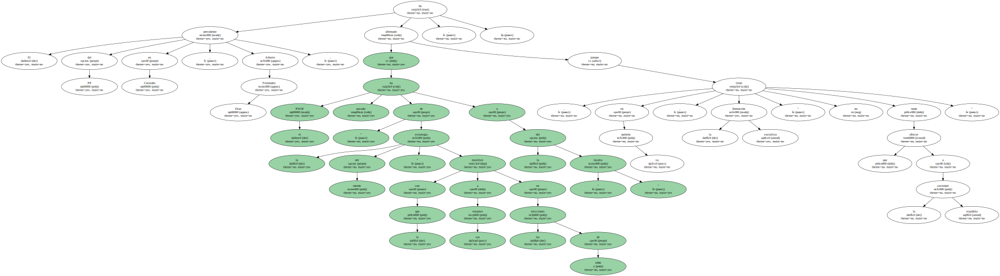
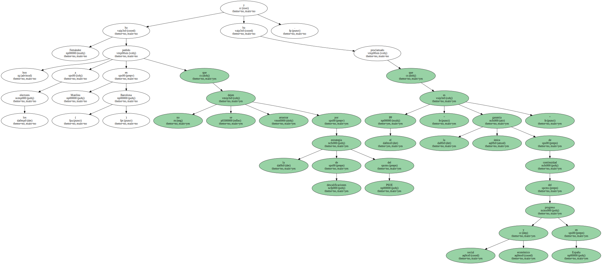
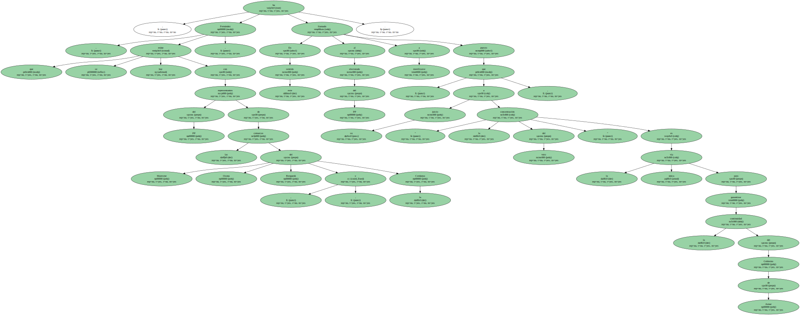
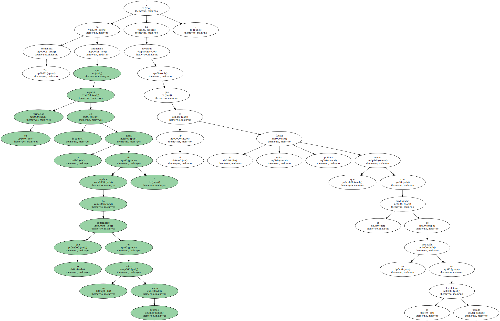

El presidente del PP en Cataluña , Alberto Fernández Díaz , ha afirmado que el PSOE ha pasado " de la estrategia del miedo " con la que movilizó a sus votantes en las elecciones de 1996 a la del " insulto " , porque , en su opinión , la formación socialista " no tiene nada que ofrecer a la sociedad española ".
Fernández ha pedido hoy a los electores en Manlleu ( Barcelona ) que no se dejen arrastrar por la estrategia de descalificaciones del PSOE y ha proclamado que el PP " es la única garantía de continuidad del progreso social y económico en España ".
Asimismo , el dirigente popular ha acusado a CiU de " esconder su predisposición a pactar con el PSOE " , y ha apelado al " voto útil y consciente " porque " en Cataluña sólo hay dos opciones en estas elecciones , Aznar o Almunia ".

En este sentido , Fernández , que se reúne hoy con representantes del PP de las comarcas del Maresme , Osona , Berguedá y la Cerdanya , ha llamado al electorado del PP a movilizarse puesto que , a su juicio , " la concentración del voto " es la única vía para garantizar la continuidad del Gobierno de Aznar.
Fernández Diaz ha anunciado que su formación seguirá " en la línea de explicar lo que ha conseguido en los últimos cuatro años " y ha advertido de que el PP es la única fuerza política que cuenta con la credibilidad de su actuación en la pasada legislatura.
